Capítulo 1 Electrofisiología cognitiva
Fuente: Basado en Cohen (2014).
1.1 ¿Qué es?
Estudia cómo la actividad eléctrica de poblaciones de neuronas participa en nuestras funciones cognitivas.
- La percepción, la memoria, el lenguaje, las emociones y el control de la conducta se desarrollan mediante actividad cerebral que cambia en el tiempo.
- La electrofisiología permite investigar esa dinámica y relacionarla con lo que una persona percibe, piensa o hace.
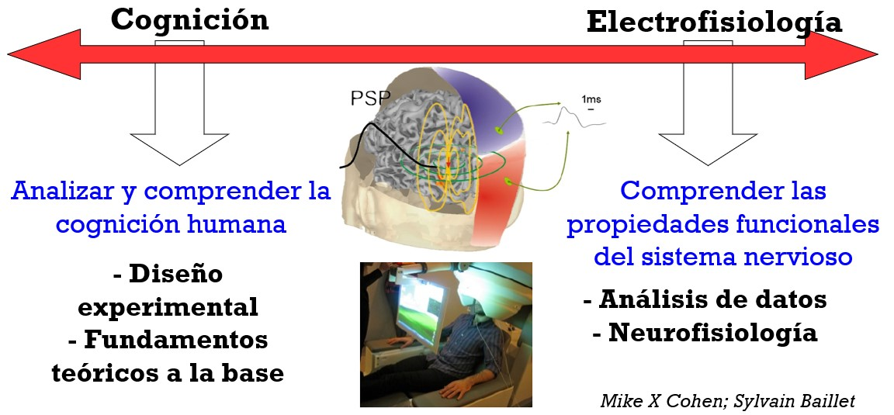
- Se describe un espectro de investigadores con distintos objetivos:
- En un extremo, el interés principal es comprender los procesos cognitivos. La electrofisiología permite distinguir procesos y subcomponentes que las medidas conductuales pueden no diferenciar. Se priorizan el diseño experimental y las teorías cognitivas.
- En el otro extremo, el interés principal es comprender las propiedades funcionales de las redes neuronales. Los paradigmas cognitivos sirven para provocar patrones específicos de actividad neuronal. Se priorizan el análisis de las señales y su interpretación neurofisiológica.
1.2 ¿Qué se registra con EEG?
El EEG registra diferencias de potencial eléctrico, habitualmente expresadas en microvoltios (µV).
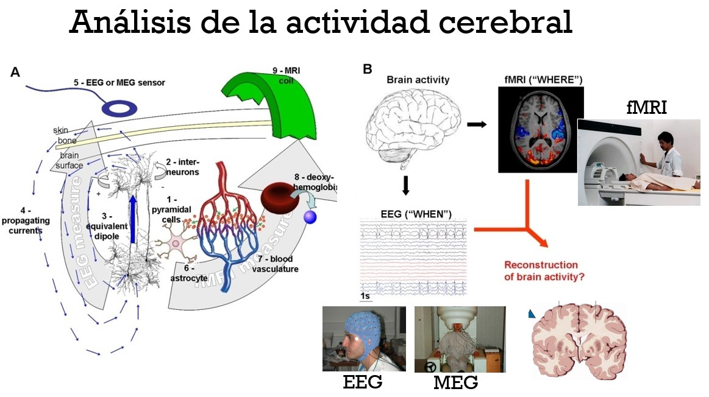
El voltaje de cada electrodo se mide respecto de una referencia.
La señal refleja actividad eléctrica de poblaciones neuronales, principalmente células piramidales corticales.
- Cuando muchas neuronas están activas de manera sincronizada, sus pequeños campos eléctricos pueden sumarse y detectarse desde el cuero cabelludo.
- La actividad de poblaciones pequeñas, poco sincronizadas o con orientaciones que producen cancelación puede ser difícil o imposible de registrar.
Un electrodo recibe contribuciones de varias fuentes cerebrales, y una fuente puede contribuir a varios electrodos.
Hay varias técnicas relacionadas.
| Técnica | ¿Qué mide y desde dónde? |
|---|---|
| EEG | Actividad eléctrica mediante electrodos en el cuero cabelludo. |
| MEG | Actividad magnética mediante sensores externos sobre la cabeza. |
| ECoG | Actividad eléctrica mediante electrodos colocados sobre la superficie cortical. |
EEG: Electroencefalograma. Mide actividad eléctrica desde electrodos ubicados en el cuero cabelludo.
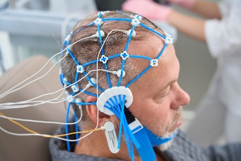
El EEG vs la MEG
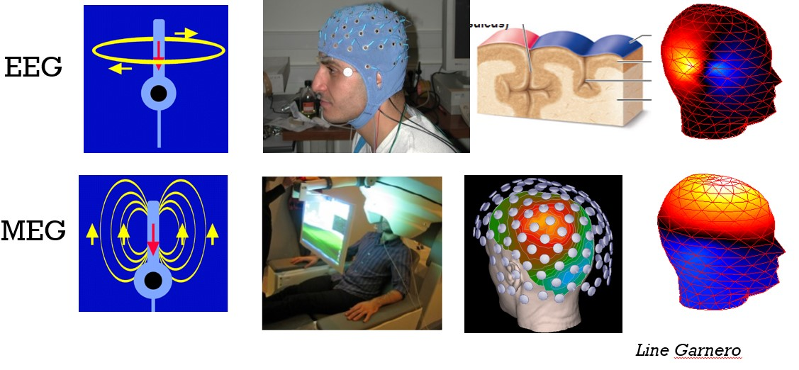
1.3 ¿Para qué usar el EEG?
El EEG resulta especialmente útil cuando importa cómo cambia la actividad cerebral en el tiempo.
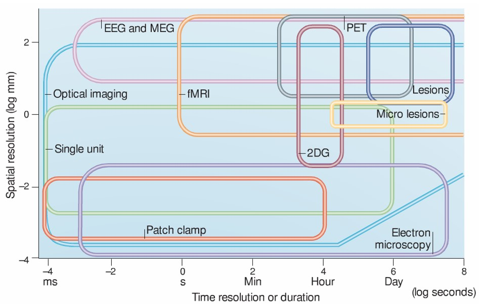
Hay 3 ventajas principales:
Permite estudiar la cognición en la escala temporal en que ocurre. Los procesos perceptivos, cognitivos y motores se desarrollan en decenas o cientos de milisegundos. El EEG permite seguir esos cambios rápidos y su secuencia temporal.
Mide directamente la actividad eléctrica de poblaciones neuronales. Las fluctuaciones de voltaje reflejan fenómenos biofísicos neuronales, a diferencia de medidas como la señal BOLD, que registra cambios hemodinámicos relacionados con esa actividad.
Proporciona una señal multidimensional. Podemos estudiar cuándo ocurre la actividad, cómo se distribuye entre electrodos y cuáles son sus características de frecuencia, potencia y fase.
- Esto permite formular hipótesis basadas tanto en procesos cognitivos como en mecanismos neurofisiológicos.
- También permite relacionar registros no invasivos en humanos con registros invasivos en animales y modelos de actividad neuronal.
1.4 ¿Cuándo no es adecuado?
Cuando la pregunta requiere una localización anatómica precisa. El EEG es poco adecuado para determinar exactamente dónde ocurre un proceso o para estudiar estructuras cerebrales profundas.
Cuando los procesos cognitivos son lentos y tienen un curso temporal incierto y variable. Si un proceso se desarrolla durante varios segundos y ocurre en momentos distintos en cada ensayo, resulta difícil relacionar sus cambios con la señal EEG.
1.5 ERPs
Los potenciales relacionados a eventos (ERPs) son respuestas eléctrica promedio alineadas a un evento.
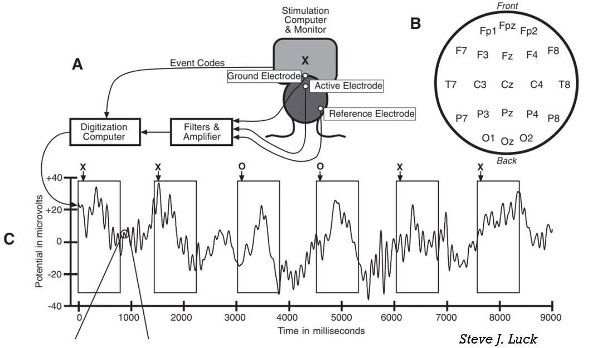
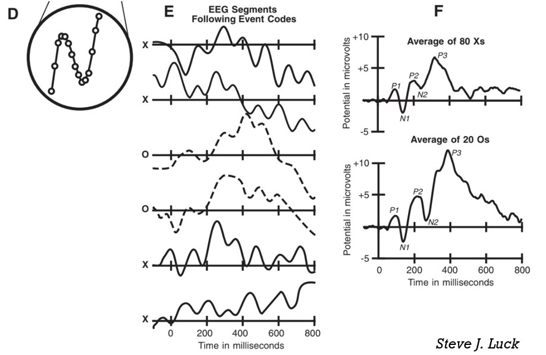
- Se recortan segmentos alrededor de un estímulo o una respuesta
- Se alinean en el tiempo y
- Se promedian los voltaje
- El resultado permite examinar amplitudes y latencias: cuánto cambia el voltaje y cuándo ocurre ese cambio.
RP: El potencial de preparación señala la preparación de una respuesta motora.
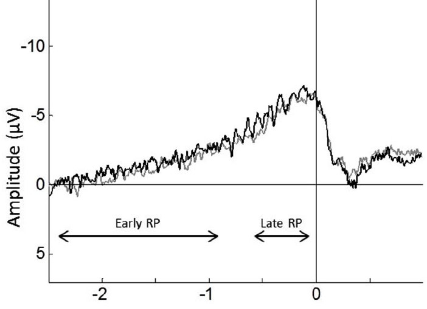
1.5.1 Ventajas
- Son relativamente sencillos y rápidos de calcular.
- Conservan alta precisión temporal cuando el procesamiento introduce poco suavizado.
- Cuentan con una extensa tradición de resultados e hipótesis para orientar su interpretación.
- Permiten una primera revisión de la calidad de los datos y de la alineación de los eventos.
1.5.2 Limitaciones
- El promedio puede cancelar actividad relevante cuya fase varía entre ensayos.
- La variabilidad temporal de las respuestas puede ensanchar o reducir los componentes.
- Una ausencia de diferencias en el ERP no implica ausencia de diferencias en el EEG.
- El ERP por sí solo no caracteriza todas las dinámicas de las redes, como las relaciones de fase entre frecuencias o regiones.
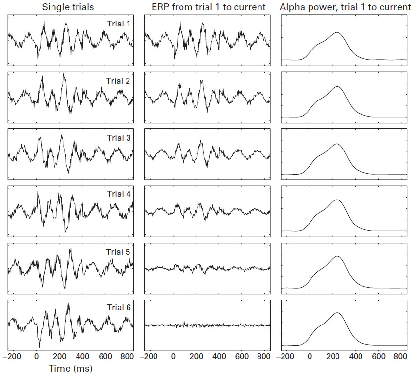
1.6 Análisis TF
Permite comprender cómo cambian, a lo largo del tiempo, propiedades de la señal como la potencia y la fase en distintas frecuencias.
- En vez de describir únicamente el voltaje promedio, descompone la señal para estimar propiedades como potencia y fase. Así podemos preguntar, por ejemplo, si una condición cambia la potencia de una banda durante un período del ensayo.
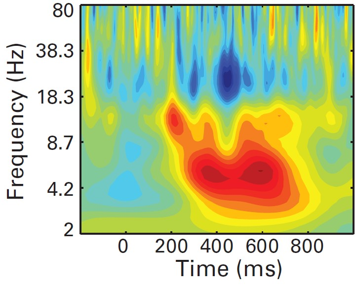
1.6.1 Ventajas
- Recupera cambios de potencia que pueden desaparecer en el ERP por diferencias de fase entre ensayos.
- Distingue dinámicas que coexisten en distintas frecuencias.
- Permite plantear hipótesis sobre mecanismos oscilatorios y vincular resultados entre escalas de registro y especies.
1.6.2 Limitaciones
- Introduce suavizado: se pierde precisión temporal respecto de una señal sin filtrar.
- Exige elegir parámetros; esos parámetros influyen en la apariencia y delimitación de los efectos.
- Multiplica las comparaciones entre tiempos, frecuencias y electrodos.
- Una representación tiempo-frecuencia no demuestra, por sí sola, que exista una oscilación neuronal.
ERP y TF son complementarios. La elección depende de la pregunta, no de que un análisis sea universalmente superior.
1.7 Conceptos importantes
Son propiedades distintas. Piensen en una diana:
- El número de puntos representa la resolución (densidad de muestreo)
- Su dispersión, la precisión (incertidumbre en la medición)
- Su distancia al centro, la exactitud (correspondencia con el fénomeno que la genera)
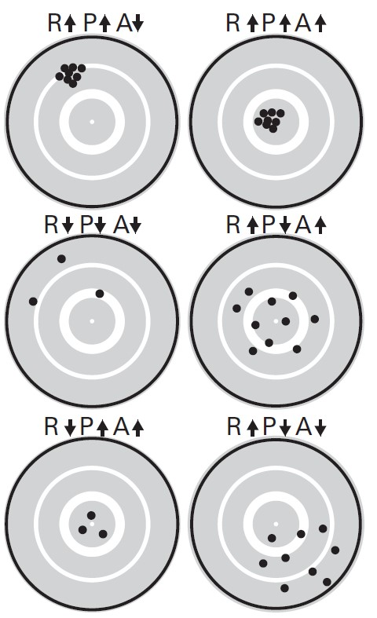
1.7.1 En el tiempo
- Resolución temporal: cantidad de muestras registradas por unidad de tiempo.
- Depende de la frecuencia de muestreo. Por ejemplo, 1000 Hz significa una muestra cada milisegundo.
- Precisión temporal: grado de incertidumbre sobre el momento al que corresponde la actividad estimada.
- Depende del análisis. Los filtros y la descomposición tiempo-frecuencia combinan información de momentos vecinos.
- Tener un resultado en cada milisegundo no significa que cada resultado refleje exclusivamente lo ocurrido en ese milisegundo.
- Exactitud temporal: correspondencia entre el momento de la actividad neuronal y el momento de su medición eléctrica.
- Es muy alta porque los campos eléctricos llegan a los electrodos prácticamente de manera instantánea a la escala del registro.
1.7.2 En el espacio
- Resolución espacial: en la terminología de Cohen, depende del número de electrodos que muestrean el cuero cabelludo.
- Más electrodos aportan más puntos de medición; su utilidad depende de la pregunta y del análisis.
- Precisión espacial: qué tan localizada puede quedar la actividad estimada.
- Es relativamente baja en el EEG, aunque puede mejorar mediante filtros espaciales y métodos de reconstrucción de fuentes.
- Exactitud espacial: correspondencia entre la localización atribuida a la actividad y su origen cerebral real.
- Es limitada porque un electrodo recoge una mezcla de contribuciones de regiones próximas y distantes.
- La anatomía, la orientación de las fuentes y su actividad influyen en esa mezcla.
Aumentar el número de electrodos no convierte cada canal en una medición independiente de la región cerebral situada debajo.
Brevemente:
| Concepto | En el tiempo | En el espacio |
|---|---|---|
| Resolución | Cuántas muestras se registran por segundo. | Cuántas posiciones se muestrean mediante electrodos. |
| Precisión | Cuán acotada es la estimación temporal; disminuye con el suavizado. | Cuán delimitada es la información espacial; las fuentes se mezclan entre canales. |
| Exactitud | Correspondencia entre el momento de la actividad neuronal y su medición. | Correspondencia entre una localización estimada y la fuente cerebral real. |
1.8 Topografías
Son mapas de la distribución de una medida entre los electrodos del cuero cabelludo.
- Pueden representar voltaje en un momento determinado o potencia en una frecuencia y ventana temporal seleccionadas.
- Para interpretarlas, hay que identificar qué medida muestran, qué intervalo resumen y qué representa la escala de color.
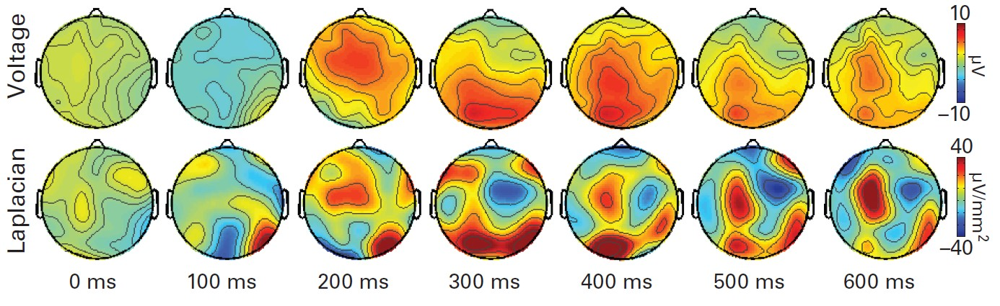
1.8.1 Localización topográfica y localización cerebral
- Localización topográfica: identifica los electrodos donde el efecto es máximo.
- Por ejemplo, señalar que una negatividad relacionada con el error es máxima en Cz o FCz describe dónde se observa el efecto en el registro.
- Localización cerebral: identifica las regiones que generaron la actividad medida.
- Requiere supuestos sobre la anatomía y las propiedades conductoras de los tejidos, además de modelos y análisis.
- Es un problema con múltiples soluciones posibles: distintas configuraciones de fuentes pueden producir una distribución similar en el cuero cabelludo.
La localización topográfica describe una observación; la localización cerebral implica una inferencia sobre sus generadores.
1.9 Lo que importa en TF
1.9.1 Frecuencia, potencia y fase
Frecuencia: número de ciclos por segundo, expresado en hercios (Hz).
- Una oscilación de 10 Hz completa 10 ciclos por segundo.
Potencia: cuadrado de la amplitud; expresa la magnitud de la actividad en una frecuencia o banda.
Fase: posición dentro del ciclo en un momento determinado, expresada en grados o radianes.
- Potencia y fase aportan información diferente. Cuando la potencia es muy baja, la fase resulta más difícil de estimar.
Las bandas agrupan rangos de frecuencias. Ej: theta está entre 4–8 Hz, alfa está entre 8–12 Hz y beta entre 15–30 Hz. Los límites no son exactos: pueden variar entre estudios y existen diferencias individuales en las frecuencias de máxima actividad.
| Propiedad | Pregunta | Ejemplo |
|---|---|---|
| Frecuencia | ¿Qué tan rápido oscila? | 10 Hz = 10 ciclos por segundo; cada ciclo dura 100 ms. |
| Potencia | ¿Qué magnitud tiene la actividad en esa frecuencia? | Se obtiene del cuadrado de la amplitud; duplicar la amplitud cuadruplica la potencia. |
| Fase | ¿En qué punto del ciclo está? | Dos señales pueden tener igual potencia, pero una estar en su cresta mientras la otra está en su valle. |
1.9.2 Compromiso entre precisión temporal y frecuencial
Mejorar la precisión en el tiempo suele reducir la precisión en frecuencia, y viceversa.
- Para distinguir frecuencias cercanas se necesita información de un intervalo temporal más amplio.
- Para seguir cambios muy breves hay que aceptar mayor incertidumbre sobre su frecuencia exacta.
- Cohen lo ilustra con una limitación concreta: 20 ms de EEG no bastan para caracterizar actividad de 5 Hz.
- Un resultado situado en un punto del mapa resume información de tiempos y frecuencias vecinos; no es una medición aislada de ese punto.
Para caracterizar una señal lenta necesitamos observarla durante más tiempo. Por ejemplo, un ciclo de 5 Hz dura 200 ms: un fragmento de 20 ms no basta para caracterizar esa oscilación.
Un valor mostrado en “10 Hz, 300 ms” resume información de frecuencias y tiempos vecinos. No es una medición aislada, exacta, de ese único punto.
1.9.3 Los datos TF
Los datos se pueden organizar por tiempo, frecuencia y electrodo. Cada gráfico muestra una selección o un resumen de esas dimensiones:
- Espectro: potencia según frecuencia, resumida durante un período. No muestra cómo cambia dentro de ese período.
- Curso temporal: evolución de la actividad en una banda seleccionada. Aunque se parezca visualmente a un ERP, representa otra medida.
- Topografía: distribución entre electrodos en un punto o ventana tiempo-frecuencia.
- Mapa tiempo-frecuencia: tiempo en el eje horizontal, frecuencia en el vertical y una medida representada mediante colores.
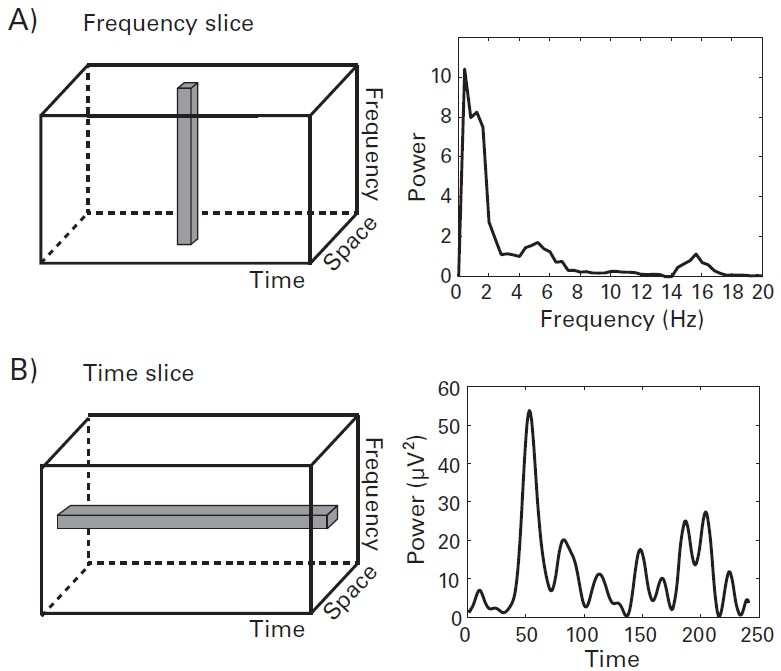
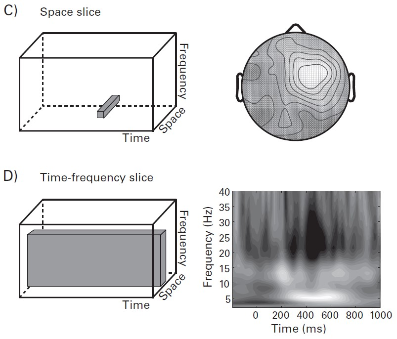
El color no siempre representa potencia: también puede mostrar consistencia de fase, conectividad o correlación con la conducta.
Brevemente:
| Vista | ¿Qué muestra? | ¿Qué se selecciona o resume? |
|---|---|---|
| Espectro | Potencia según frecuencia. | Un período y uno o varios electrodos. |
| Curso temporal | Potencia según tiempo. | Una banda y uno o varios electrodos. |
| Topografía | Distribución entre electrodos. | Una banda y una ventana temporal. |
| Mapa tiempo-frecuencia | Cambios según tiempo y frecuencia. | Un electrodo o conjunto de electrodos. |
1.9.4 Cómo leer un mapa tiempo-frecuencia
Puedes seguir 5 pasos:
- Identificar qué se representa. Comprender la medida indicada en la leyenda: potencia, fase, conectividad u otra.
- Revisa ejes y escala. ¿Qué significa tiempo cero? ¿Qué frecuencias se muestran? ¿Qué unidades tienen los colores? ¿Se expresa un cambio respecto de una línea base?
- Describir los resultados. Identificar cuándo aparecen, cuánto duran, qué frecuencias abarcan y cómo se distribuyen entre electrodos. Revisar también el período previo al estímulo.
- Relacionarlos con el experimento. Determinar qué significa tiempo cero y dónde ocurren los estímulos y respuestas. Preguntarse qué aportan los resultados a la comprensión del proceso estudiado.
- Examinar el respaldo estadístico. Distinguir análisis guiados por hipótesis de análisis exploratorios; revisar cómo se eligieron las ventanas y cómo se abordaron las comparaciones múltiples.
La línea base es un período de referencia para expresar cambios. Una disminución respecto de ella no significa ausencia de actividad. Del mismo modo, un cambio respecto de la línea base no equivale automáticamente a una diferencia entre condiciones.
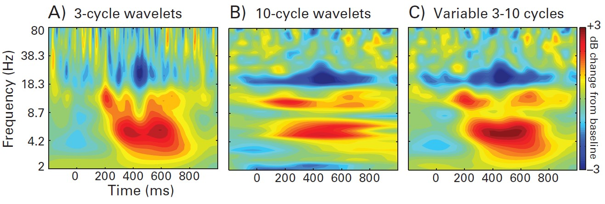
1.9.5 ¿Qué patrones requieren especial atención?
- Franjas horizontales o verticales: pueden reflejar problemas de filtrado o efectos de borde.
- Aumentos breves y muy intensos en altas frecuencias: pueden deberse a artefactos, incluso presentes en un solo ensayo.
- Cambios que abarcan muchas bandas: pueden relacionarse con ruido mecánico o actividad muscular.
- Variaciones de color extremadamente rápidas, especialmente en bajas frecuencias: pueden indicar un problema de análisis o que se graficó otra propiedad de la señal en lugar de potencia.
- Topografías extrañas con numerosos picos: pueden reflejar electrodos ruidosos o errores en la correspondencia entre etiquetas y posiciones.
- Frecuencias extremas: por encima de 100 Hz, la baja relación señal/ruido exige especial cuidado; por debajo de 1 Hz, los filtros y las derivas lentas pueden afectar la interpretación.
1.10 Del registro al análisis
Entre registrar el EEG y responder una pregunta hay 2 etapas: preparar los datos y calcular las medidas que nos interesan.
- Preprocesamiento: organizar los datos y reducir la influencia del ruido y los artefactos.
- Análisis (procesamiento): obtener medidas de actividad cerebral y utilizarlas para investigar una pregunta.
| Etapa | Pregunta principal | Ejemplo |
|---|---|---|
| Preprocesamiento | ¿Los datos están preparados para el análisis? | Identificar ensayos contaminados por movimientos. |
| Análisis | ¿Qué información podemos extraer de estos datos? | Estimar cómo cambia la potencia alfa después de un estímulo. |
1.10.1 Preprocesamiento
Incluye las operaciones que realizamos entre la adquisición del EEG y su análisis.
Estas operaciones pueden:
- Organizar los datos, sin modificar los valores de la señal.
- Ej: segmentar el registro continuo en épocas alrededor de un estímulo.
- Excluir datos de mala calidad.
- Ej: rechazar un ensayo con un artefacto intenso.
- Transformar la señal.
- Ej: aplicar un filtro o cambiar la referencia.
Nuestro objetivo es reducir el ruido conservando la actividad de interés. Como ambos pueden estar mezclados, una limpieza más intensa también puede eliminar señal relevante.
1.10.2 ¿Qué operaciones incluye?
La secuencia depende del registro, del experimento y del análisis previsto.
| Operación | ¿Para qué sirve? |
|---|---|
| Importar y revisar el registro | Comprobar la señal y varios parámetros (canales, frecuencia de muestreo …). |
| Incorporar las posiciones de los electrodos | Relacionar cada canal con su ubicación para representar topografías y realizar análisis espaciales. |
| Revisar los triggers | Identificar correctamente los estímulos, las respuestas y las condiciones del experimento. |
| Filtrar | Atenuar determinadas frecuencias, como las derivas muy lentas o el ruido eléctrico. |
| Revisar los canales auxiliares | Utilizar señales oculares, cardíacas o musculares para reconocer posibles artefactos. |
| Crear épocas | Recortar segmentos alrededor de eventos y definir qué corresponde al tiempo cero. |
| Corregir por línea base | Restar, para cada canal y época, el voltaje promedio de un período de referencia a todos los puntos de esa época. El promedio del período de referencia queda en cero. |
| Detectar canales y ensayos problemáticos | Identificar datos que requieren exclusión o tratamiento adicional. |
| Cambiar la referencia | Expresar el voltaje de los canales respecto de una referencia seleccionada. |
| Aplicar ICA, cuando corresponda | Separar componentes e identificar aquellos asociados con artefactos para retirarlos de la reconstrucción de la señal. |
| Interpolar canales, cuando corresponda | Estimar la señal de un canal defectuoso a partir de otros electrodos y sus posiciones. |
- Filtrar no elimina todos los artefactos. La actividad muscular y cerebral puede compartir frecuencias.
- ICA requiere interpretar los componentes. No todo componente es un artefacto ni corresponde a una única fuente cerebral.
- Interpolar no recupera una medición perdida. Produce una estimación basada en los canales disponibles.
- Para TF se necesitan márgenes temporales adicionales. Conviene conservar datos antes y después del intervalo de interés para limitar la influencia de los efectos de borde.
1.10.3 Análisis
Con los datos preparados, calculamos las medidas que permiten abordar nuestra pregunta.
- ERPs: promediar el voltaje de los ensayos alineados a un evento.
- ¿Cuándo aparece una respuesta y cuál es su amplitud?
- Potencia TF: estimar cómo cambia la magnitud de la actividad en distintas frecuencias.
- ¿Disminuye la potencia alfa después del estímulo?
- Consistencia de fase entre ensayos: evaluar si la fase se repite en un momento respecto del evento.
- ¿La fase de una frecuencia es similar entre ensayos?
- Conectividad: cuantificar relaciones entre las señales de distintos sitios.
- ¿Mantienen una diferencia de fase consistente o covarían sus potencias?
Estas medidas pueden compararse entre condiciones o relacionarse con la conducta.
1.10.4 Un ejemplo completo
Pregunta: ¿cambia la potencia alfa después de presentar un estímulo visual?
- Registro: adquirir el EEG y los marcadores que indican cuándo apareció cada estímulo.
- Preprocesamiento: revisar los canales y eventos, tratar los artefactos y extraer épocas con márgenes suficientes.
- Analisis: calcular la potencia TF de cada ensayo y expresar sus cambios respecto de una línea base.
- Estadística: examinar cuándo y dónde aparece el cambio y realizar el contraste estadístico correspondiente.
1.10.5 Lo importante
- El preprocesamiento puede consumir mucho tiempo, pero determina la calidad de los análisis posteriores.
- Una misma preparación puede servir para varios análisis, siempre que conserve la información necesaria para cada uno.
- Las decisiones deben quedar registradas: filtros, referencia, ensayos excluidos, canales interpolados y componentes retirados.
- Deben aplicarse procedimientos y criterios consistentes entre condiciones, para evitar introducir diferencias artificiales.
- Un análisis sofisticado no compensa un registro de mala calidad.
El análisis puede estar guiado por hipótesis o ser exploratorio. En ambos casos, debemos distinguir lo que estaba previsto de lo que surgió al examinar los datos.